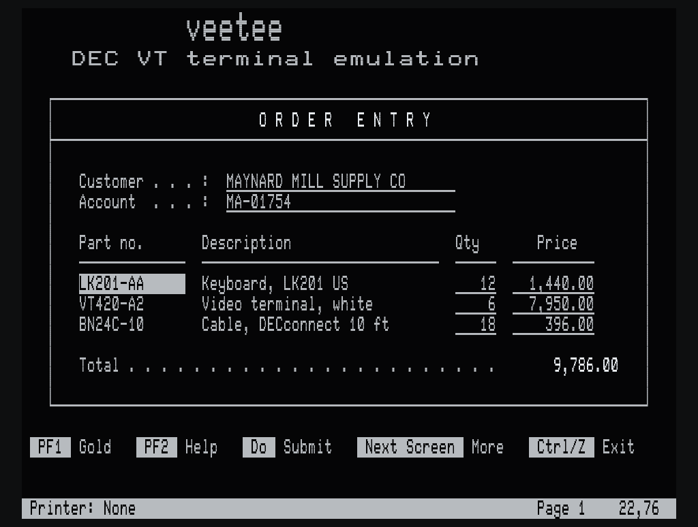
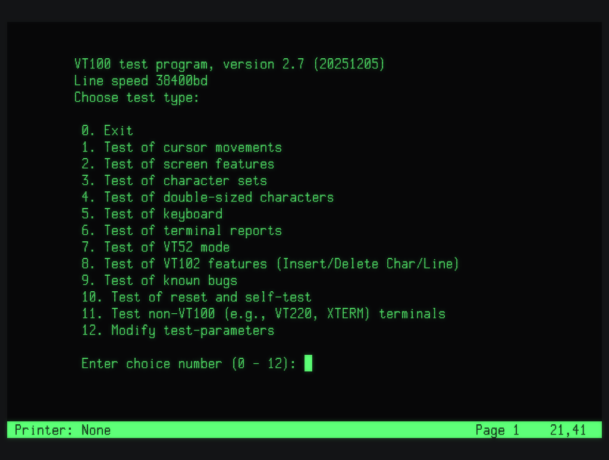
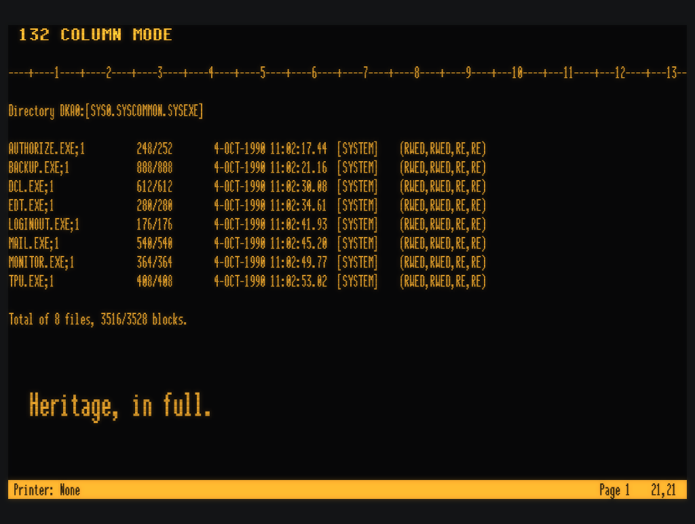
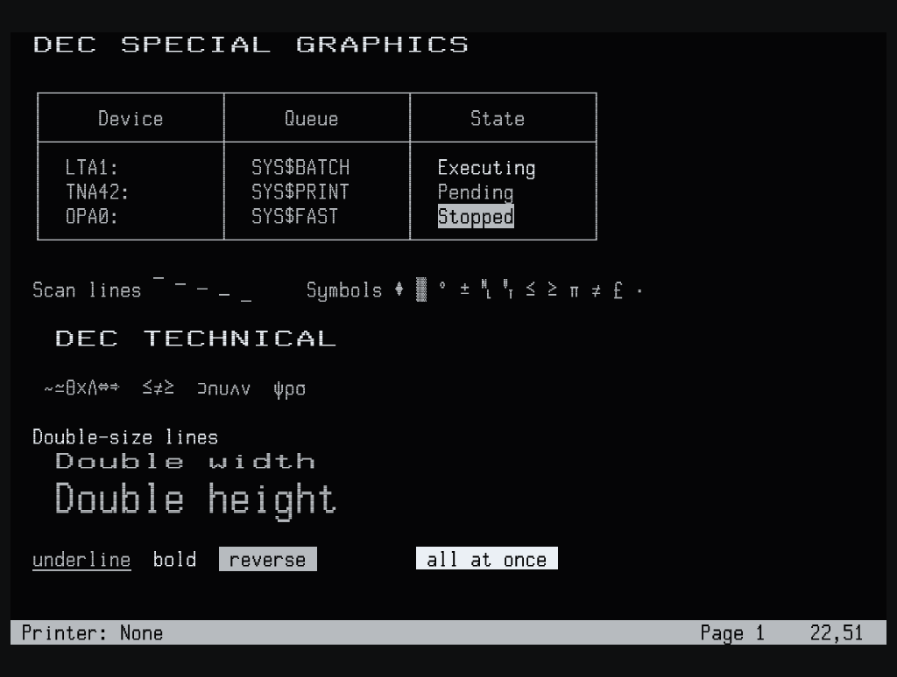
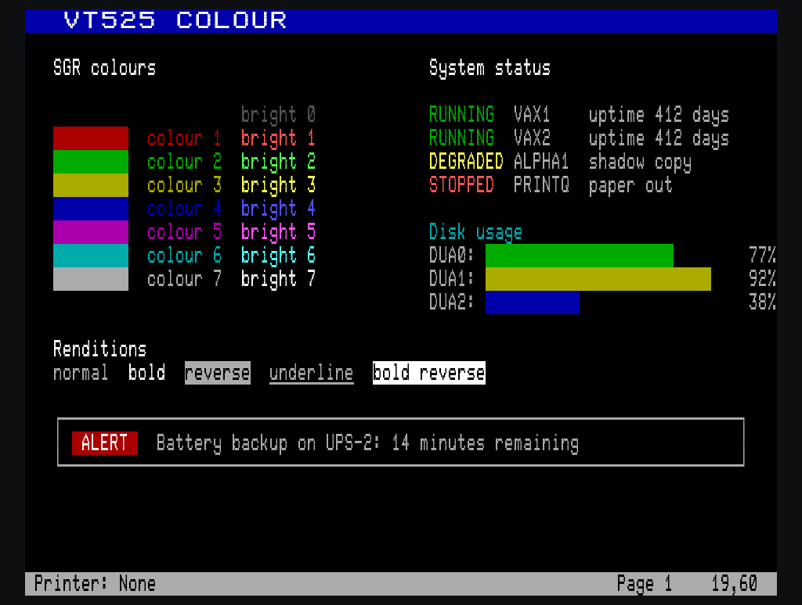
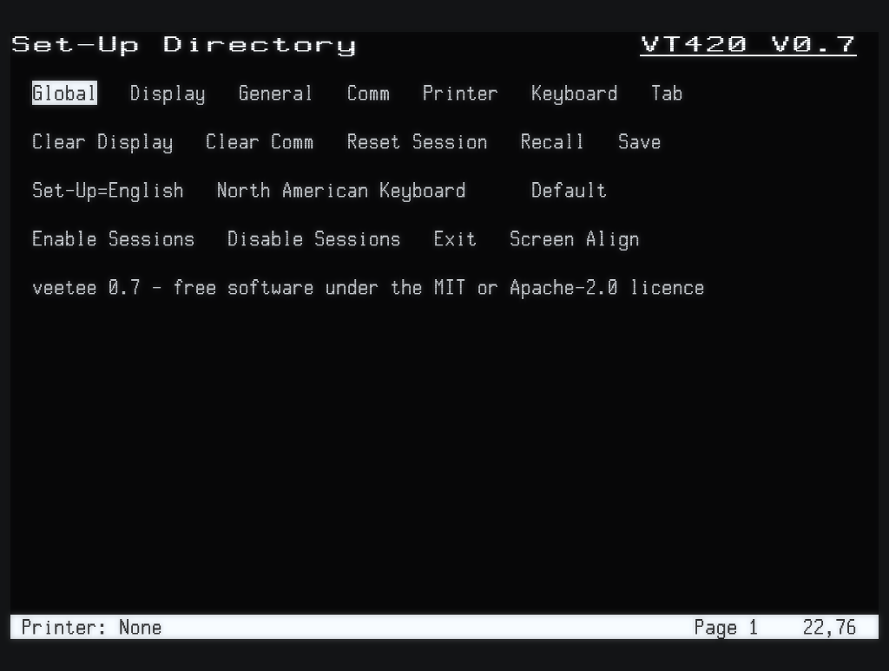
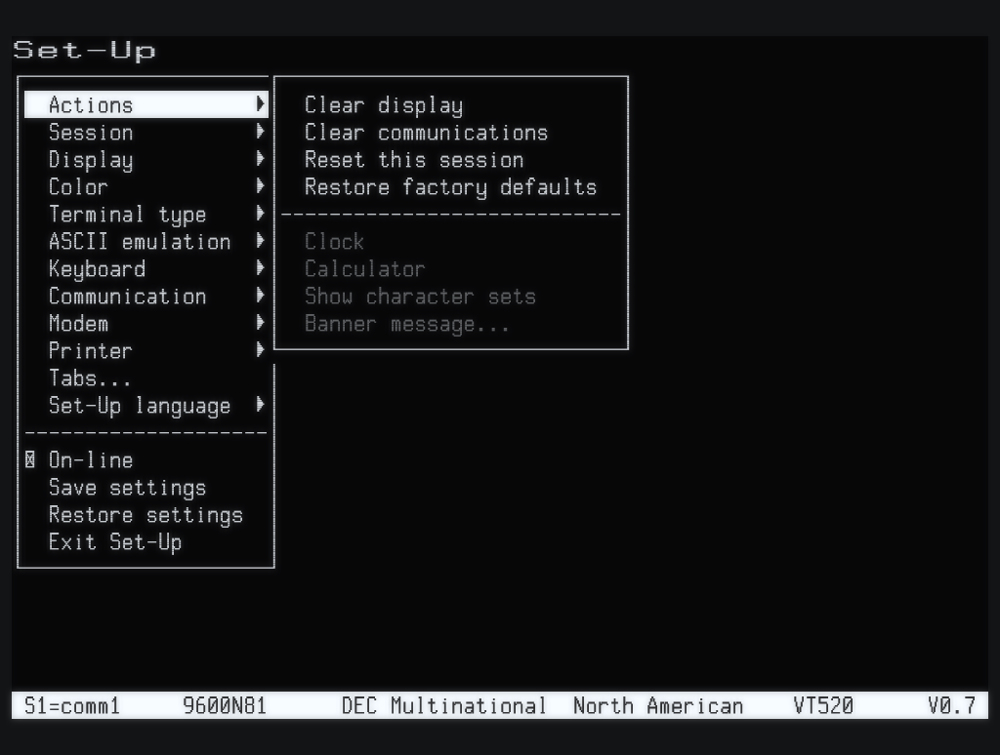
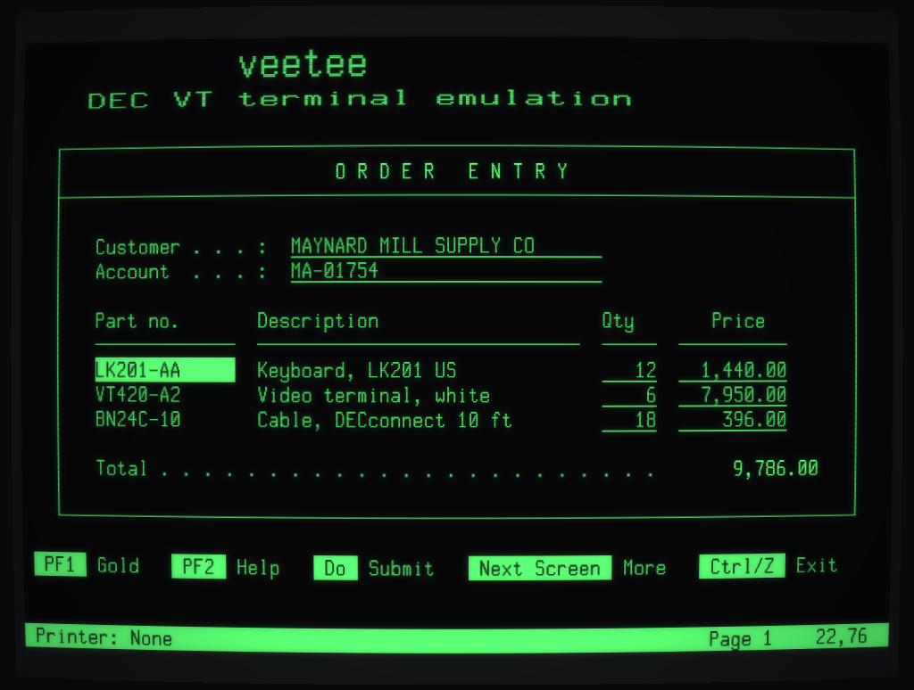
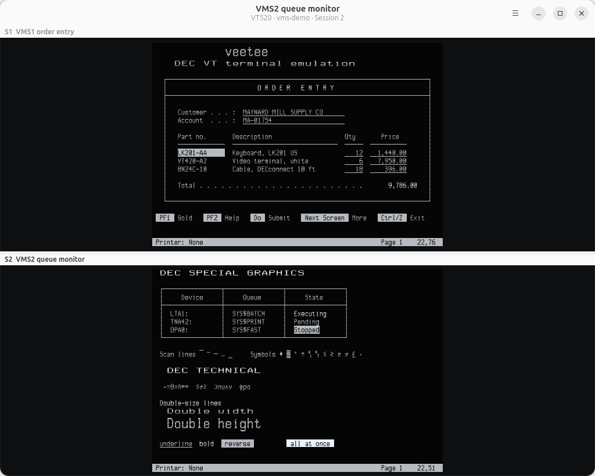

The DEC terminal,
kept alive.
veetee is an open-source DEC VT terminal for Linux and Windows. It is built from DEC's own programmer references and tested screen by screen, so OpenVMS, DECforms, FMS and EDT behave exactly as they did on the glass.
Linux · Windows · GTK 4 · MIT or Apache-2.0 · .deb, tarball and zip

Real screens, real renderer
Every screenshot is veetee.
No mock-ups: each screen was captured from veetee's own OpenGL renderer, running vttest or a demo script, with its phosphor glow. Original bitmap fonts are drawn dot by dot on DEC's own 10×16 character cells, with scan lines, double-size lines made by doubling the dots, and 132 columns that really narrow the characters.








Built from the manuals
The features legacy hosts depend on.
General-purpose terminals stop at "mostly VT100". veetee implements the DEC functions that OpenVMS applications actually use, level by level, from VT52 to VT525.
A proper LK401 keypad
PF1–PF4, the editing keypad, Help, Do and F6–F20 in their DEC positions, with application keypad modes, UDKs and 7- or 8-bit codes. EDT and EVE feel right at once.
DECforms and FMS fields
Protected fields with selective erase, status lines, double-size banners, DEC Special Graphics and 132-column switching: everything a forms application expects.
Soft fonts and charsets
Downloadable character sets, 17 national replacement sets, DEC Supplemental, DEC Technical, ISO Latin, and the VT500 Greek, Hebrew, Turkish and Cyrillic sets.
VT420 rectangles and pages
Left/right margins, rectangular copy, fill, erase and attribute changes, checksums that match the hardware, page memory, macros and state reports.
Dual sessions
Two independent sessions in a split window, just like a VT520 on two comm lines. The host can name each session and make it active.
Telnet, SSH, serial and LAT
Native Telnet with BREAK and RFC 2217 line control for terminal servers, SSH through your OpenSSH setup, and serial lines at DEC factory defaults (9600 8N1 XON/XOFF), on Linux and on Windows COM ports. On Linux there is LAT as well, DEC's own protocol straight on Ethernet: find the nodes announcing themselves and open a session, which OpenVMS sets up as a VT420.
Power-user touches
Saved connections, session logs with timestamps, a searchable scrollback, screen reader support, copy and paste that translate DEC characters, Hold Screen with real flow control, a visual LK401 keymap editor, VT520 key programming and session recordings that replay as tests.
Set-Up, as DEC built it
The VT420 Set-Up Directory and its screens, or on a VT520 the pull-right menus and summary line, with Save, Recall and Default. Saved settings are the power-up settings, and Display Controls shows exactly what the host sends.
Sound and motion
Keyclick, warning and margin bells and DECPS tunes at the Set-Up volumes; smooth scroll at DEC speed with flow control; a CRT saver that blanks an idle screen.
Honest identity
Device attributes, mode reports, DECRQSS and terminal state reports answer as the chosen model, so SET TERMINAL/INQUIRE sees the terminal you picked.
Heritage
Fifty years of glass, one terminal.
Each generation of DEC video terminal added something that applications came to rely on. veetee emulates the whole line, with each model's own identity and conformance levels.
Proof, not promises
Tested like it was 1987.
Behaviour comes from DEC's documentation, and every claim is checked against the test suites the terminal community has trusted for decades.
“DEC documentation first. Where DEC and xterm differ, the DEC behaviour is the default, and xterm behaviour is an opt-in setting.”— the veetee compatibility matrix
$ INSTALL/LOG
On the air in a minute.
Debian and Ubuntu
Download the package from the latest release and install it. GTK 4.14 and libadwaita 1.5 or later are required.
Any distribution, with Flatpak
A Flatpak bundle runs on any distribution with the GNOME runtime from Flathub. Local shells and --ssh run on the host, so your own shell and ~/.ssh apply.
Windows 10 and 11
One zip with GTK included: unzip it anywhere and run bin\veetee.exe. Local sessions use the Windows pseudo console, --ssh uses Windows' OpenSSH client, and --serial COM3 opens a COM port.
From source
Then connect
Telnet, SSH, serial, LAT or a local shell, as any model from VT100 to VT525.
On the host
Roadmap
The road to 1.0.
One milestone per minor release. Lit means shipped.